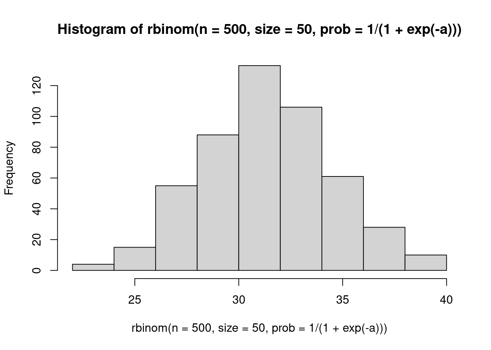

a <-rnorm(1, mean =0, 1)hist(rbinom(n =500, size =50, prob =1/ (1+exp(-a))))

Statistical models of Penguin bill morphology.
We’ll be studying the relationship between two numbers about penguin bills. Specifically, we’ll ask “Are longer bills also deeper?”. This question might not be the most interesting ecologically, but it is a great chance to practice some interesting stats.
But, if we take the data as we found it, we’re going to be talking about \(\beta_0\) as the depth of a penguin’s bill when the bill has 0 length! Either way it is the same line. However, from the point of view of setting priors and interpreting coefficients, it helps a lot to set a meaningful 0.
A very common choice is to subtract the average from your independent variable, so that it is equal to 0 at the average:
What continuous predictors have you used in your analysis? How would you find a biologically meaningful zero? Think about how you would center time, age, mass, fitness etc.
Prior predictive simulations
Armed with this model, it becomes much easier to think about prior predictions.
We’ll make a bunch of lines implied by the equation above. There’s two steps:
Center the predictor
Make up a vector that goes from the minimum to the maximum of the predictor. This is just for convenience!
bill_len_centered <-with(penguins, bill_length_mm -mean(bill_length_mm,na.rm =TRUE))## make up a short vectorsome_bill_lengths <-seq(from =min(bill_len_centered, na.rm =TRUE), to =max(bill_len_centered, na.rm =TRUE),length.out =10 )
Shortcuts to these common tasks
These tasks are so common that they are automated in helper functions.
For centering predictors, see the base R function ?scale
For creating a short vector over the range of a predictor, see modelr::seq_range. The R package modelr has many different functions to help with modelling.
To simulate, we’ll use some matrix algebra, as we saw in lecture:
Discussion : Look just at the posterior distribution of the slope right above. Do we have evidence that there’s a relationship between bill length and bill depth.
Posterior predictions in R
We can calculate a posterior prediction line directly in R for these data. I’ll show each step in this workflow separately:
tidybayes helps us extract the posterior distribution of the parameters into a convenient object called an rvar. Learn more about tidybayes here and about the rvar datatype here
Next we combine these posteriors with a vector of observations to make a posterior distribution of LINES:
Extend this model to include species. Specifically, let each species have its own value of the intercept. This involves combining this regression example with the previous activity on discrete predictors.
When you’re done, look at the resulting summary of coefficients. What do you notice that’s different?
We set up a list for this model just as we did before. Note that this time we are using TRIPLE the pred_values, because we want to run independent predictions for each species.
show how the \(\sigma\) is different between these two models
Source Code
---title: "Univariate regression"description: | The shortest route to science is a straight line.execute: freeze: truecomments: hypothesis: trueformat: html: code-tools: trueeditor_options: chunk_output_type: console---## Simulation workout! 1) make a histogram of 500 numbers from a distribution! * normal * poisson * ** EXTRA** try a new one, like beta, gamma, lognormal2) make a histogram of poisson observations, using the classic **`log()` link function**. $$\begin{align}y &\sim \text{Poisson}(e^a) \\a &\sim \text{Normal}(??, ??)\end{align}$$:::{.callout-note collapse="true"}### TIP```{r}## sample poisson variables like this:rpois(500, exp(3))```:::3) make a histogram of Binomial observations, using the **inverse logit link function**$$\begin{align}y &\sim \text{Binomial}\left(\frac{1}{1+e^{-a}}, N \right) \\a &\sim \text{Normal}(??, ??)\end{align}$$Here's a plot of the link function, to help you think about it:```{r}curve(1/ (1+exp(-x)), xlim =c(-3, 3), ylim =c(0, 1))```:::{.callout-note collapse="true"}### TIP```{r}a <-rnorm(1, mean =0, 1)hist(rbinom(n =500, size =50, prob =1/ (1+exp(-a))))```:::## Statistical models of Penguin bill morphology.We'll be studying the relationship between two numbers about penguin bills. Specifically, we'll ask **"Are longer bills also deeper?"**. This question might not be the most interesting ecologically, but it is a great chance to practice some interesting stats.Let's begin with plotting the data: ```{r}#| fig-cap: Bill depth (mm) as predicted by bill length (mm) across the entire `palmerpenguins` dataset.library(palmerpenguins)library(tidyverse)library(cmdstanr)library(tidybayes)penguins |>ggplot(aes(x = bill_length_mm, y = bill_depth_mm)) +geom_point() +stat_smooth(method ="lm")```Let's write a simple statistical model for these data:$$\begin{align}\text{Bill depth}_i &\sim \text{Normal}(\mu_i, \sigma) \\\mu_i &= \beta_0 + \beta_1\times\text{Bill length}_i \\\beta_0 &\sim \text{Normal}(??) \\\beta_1 &\sim \text{Normal}(??) \\\sigma &\sim \text{Exponential}(??)\end{align}$$What should our priors be? Before we can answer that, we have a more important question::::{.callout-warning}# WHERE IS ZERO??It has to be somewhere. Does it make sense? take control and choose for yourself.:::If we fit a model like this **without** thinking about the location of zero, we get some pretty silly answers:```{r}bill_line <-coef(lm(bill_depth_mm ~ bill_length_mm, data = penguins))```When the value of bill length is 0, the average of the response is the intercept:$$\begin{align}\mu_i &= \beta_0 + \beta_1\times\text{Bill length}_i \\\mu_i &= \beta_0 + \beta_1\times0 \\\mu_i &= \beta_0 \\\end{align}$$But, if we take the data as we found it, we're going to be talking about $\beta_0$ as the depth of a penguin's bill _when the bill has 0 length!_ Either way it is the same line. However, from the point of view of setting priors and interpreting coefficients, it helps a lot to set a meaningful 0.A very common choice is to **subtract the average** from your independent variable, so that it is equal to 0 at the average:$$\begin{align}\text{Bill depth}_i &\sim \text{Normal}(\mu_i, \sigma) \\\mu_i &= \beta_0 + \beta_1\times(\text{Bill length}_i - \overline{\text{Bill length}})\\\beta_0 &\sim \text{Normal}(??) \\\beta_1 &\sim \text{Normal}(??)\end{align}$$Now $\beta_0$ means the average _bill depth_ at the average _bill length_. It becomes easier to think about priors:$$\begin{align}\text{Bill depth}_i &\sim \text{Normal}(\mu_i, \sigma) \\\mu_i &= \beta_0 + \beta_1\times(\text{Bill length}_i - \overline{\text{Bill length}})\\\beta_0 &\sim \text{Normal}(17,2) \\\beta_1 &\sim \text{Normal}(0,.5) \\\sigma &\sim \text{Exponential}(0.5)\end{align}$$:::{.callout-note}## ExerciseWhat continuous predictors have you used in your analysis? How would you find a biologically meaningful zero? Think about how you would center time, age, mass, fitness etc.:::## Prior predictive simulationsArmed with this model, it becomes much easier to think about prior predictions.We'll make a bunch of lines implied by the equation above. There's two steps:1. Center the predictor2. Make up a vector that goes from the minimum to the maximum of the predictor. This is just for convenience!```{r}bill_len_centered <-with(penguins, bill_length_mm -mean(bill_length_mm,na.rm =TRUE))## make up a short vectorsome_bill_lengths <-seq(from =min(bill_len_centered, na.rm =TRUE), to =max(bill_len_centered, na.rm =TRUE),length.out =10 )```:::{.callout-warning}## Shortcuts to these common tasksThese tasks are so common that they are automated in helper functions.For centering predictors, see the base R function `?scale`For creating a short vector over the range of a predictor, see `modelr::seq_range`. The R package [`modelr`](https://modelr.tidyverse.org/) has many different functions to help with modelling.:::To simulate, we'll use some matrix algebra, as we saw in lecture:```{r}slopes <-rnorm(7, 0, .5)inters <-rnorm(7, 17, 2)X <-cbind(1, some_bill_lengths)B <-rbind(inters, slopes)knitr::kable(head(X))knitr::kable(head(B))prior_mus <- X %*% Bmatplot(x = some_bill_lengths,y = prior_mus, type ="l")```:::{.callout-note}## ExerciseCopy the code above. Increase the number of simulations. Which priors are too wide? Which are too narrow?:::### Simulating ObservationsThere are always at least TWO kinds of predictions we can be thinking about: 1. Predicted averages. This is often called a "confidence" interval for a regression line.2. Predicted observations. This is often called a "prediction" interval.We can use the full model to simulate observations! ```{r}slopes <-rnorm(7, 0, .5)inters <-rnorm(7, 17, 2)sigmas <-rexp(7, rate =0.3)X <-cbind(1, some_bill_lengths)B <-rbind(inters, slopes)prior_mus <- X %*% Bprior_obs <-matrix(0, nrow =nrow(prior_mus), ncol =ncol(prior_mus))for (j in1:ncol(prior_obs)) { prior_obs[,j] <-rnorm(n =nrow(prior_mus),mean = prior_mus[,j],sd = sigmas[j])}matplot(x = some_bill_lengths,y = prior_obs, type ="p")```Tidyverse style for those who indulge:```{r}tibble(sim_id =1:7,slopes =rnorm(7, 0, .5),inters =rnorm(7, 17, 2),sigmas =rexp(7, rate =0.2) ) |>mutate(x =list(seq(from =-10, to =10, length.out =6))) |>rowwise() |>mutate(avg =list(x * slopes + inters),obs =list(rnorm(length(avg), mean = avg, sd = sigmas)),sim_id =as.factor(sim_id)) |>unnest(cols =c("x", "avg", "obs")) |>ggplot(aes(x= x, y = avg, group = sim_id, fill = sim_id)) +geom_line(aes(colour = sim_id)) +geom_point(aes(y = obs, fill = sim_id), pch =21, size =3) +scale_fill_brewer(type ="qual") +scale_colour_brewer(type ="qual") +facet_wrap(~sim_id)```:::{.callout-tip}### EXERCISEPick one of the two simulations above and modify it. Here are some suggested modifications:* Experiment with priors that are "too narrow" or "too wide". * Try a different distribution than the one used* Instead of bill size, imagine that we are applying this model to YOUR data. What would you change?:::## Linear regression in StanNow we write a Stan program for this model. We'll begin with a simple model that has no posterior predictions:```{r eval=FALSE, include=FALSE}bill_line <-coef(lm(bill_depth_mm ~ species +I(bill_length_mm -mean(bill_length_mm, na.rm =TRUE)), data = penguins))``````{r}#| class-output: stannormal_regression_no_prediction <-cmdstan_model(stan_file ="topics/02_regression/normal_regression_no_prediction.stan")normal_regression_no_prediction```In order to get the posterior, we need to put our data in Stan. We follow the same steps as previously:* Remember to remove NAs first! * arrange the data in a list* pass the data to a Stan model to estimate.```{r}## drop NAspenguins_no_NA <- penguins |> tidyr::drop_na(bill_depth_mm, bill_length_mm) |> dplyr::mutate(bill_length_center = bill_length_mm -mean(bill_length_mm))## assemble data listdata_list <-with(penguins_no_NA,list(N =length(bill_length_center),bill_len = bill_length_center,bill_dep = bill_depth_mm ))## run the sampler, using the compiled model.normal_reg_no_pred <- normal_regression_no_prediction$sample(data = data_list, refresh =0)normal_reg_no_pred$summary()``````{r}normal_reg_no_pred$draws() |> bayesplot::mcmc_areas(pars =c("slope", "intercept", "sigma"))```:::{.callout-tip}### EXERCISE**Discussion** : Look just at the posterior distribution of the slope right above. Do we have evidence that there's a relationship between bill length and bill depth.:::## Posterior predictions in RWe can calculate a posterior prediction line directly in R for these data.I'll show each step in this workflow separately:```{r}normal_reg_no_pred |>spread_rvars(slope, intercept, sigma)````tidybayes` helps us extract the posterior distribution of the parameters into a convenient object called an `rvar`. Learn more about tidybayes [here](http://mjskay.github.io/tidybayes/articles/tidybayes.html) and about the rvar datatype [here](https://mc-stan.org/posterior/articles/rvar.html)Next we combine these posteriors with a vector of observations to make a posterior distribution of LINES:```{r}normal_reg_predline <- normal_reg_no_pred |> tidybayes::spread_rvars(slope, intercept) |>expand_grid(x =seq(from =-15, to =15, length.out =5)) |>mutate(mu = intercept + slope*x)knitr::kable(normal_reg_predline)```Finally we'll plot these:```{r}normal_reg_predline |>ggplot(aes(x = x, dist = mu)) +stat_lineribbon() +geom_point(aes(x = bill_length_center, y = bill_depth_mm),inherit.aes =FALSE,data = penguins_no_NA)```## Posterior predictions in StanWe can also make these posterior predictions in Stan.```{r}#| class-output: stannormal_regression <-cmdstan_model(stan_file ="topics/02_regression/normal_regression.stan")normal_regression``````{r}penguins_no_NA <- penguins |> tidyr::drop_na(bill_depth_mm, bill_length_mm) |> dplyr::mutate(bill_length_center = bill_length_mm -mean(bill_length_mm))data_list <-with(penguins_no_NA,list(N =length(bill_length_center),bill_len = bill_length_center,bill_dep = bill_depth_mm,npost =6,pred_values = modelr::seq_range(penguins_no_NA$bill_length_center, n =6) ))bill_norm_reg <- normal_regression$sample(data = data_list, refresh =0)``````{r}#| layout-ncol: 2library(tidyverse)bill_posterior <- bill_norm_reg |> tidybayes::spread_rvars(post_bill_dep_average[i], post_bill_dep_obs[i]) |>mutate(bill_length = data_list$pred_values[i]) bill_posterior |>ggplot(aes(x = bill_length, dist = post_bill_dep_average)) + tidybayes::stat_lineribbon() +geom_point(aes(x = bill_length_center, y = bill_depth_mm),data = penguins_no_NA, inherit.aes =FALSE) +scale_fill_brewer(palette ="Greens", direction =-1, guide ="none") +labs(title ="Average response")bill_posterior |>ggplot(aes(x = bill_length, dist = post_bill_dep_obs)) + tidybayes::stat_lineribbon() +geom_point(aes(x = bill_length_center, y = bill_depth_mm),data = penguins_no_NA, inherit.aes =FALSE) +scale_fill_brewer(palette ="Greens", direction =-1, guide ="none") +labs(title ="Predicted observations")```:::{.callout-tip}### EXERCISEExtend this model to include species. Specifically, let each species have its own value of the `intercept`. This involves combining this regression example with the previous activity on discrete predictors.When you're done, look at the resulting summary of coefficients. What do you notice that's different?::: :::{.callout-note collapse="true"}### SOLUTION```{r, include=TRUE}#| class-output: stannormal_regression_spp <-cmdstan_model(stan_file ="topics/02_regression/normal_regression_spp.stan")normal_regression_spp```We set up a list for this model just as we did before. Note that this time we are using TRIPLE the `pred_values`, because we want to run independent predictions for each species.```{r}bill_vec <- modelr::seq_range(penguins_no_NA$bill_length_center, n =6)data_list_spp <-with(penguins_no_NA,list(N =length(bill_length_center),bill_len = bill_length_center,bill_dep = bill_depth_mm,spp_id =as.numeric(as.factor(species)),npost =3*6,pred_values =rep(bill_vec, 3),pred_spp_id =rep(1:3, each =6) ))normal_reg_spp_post <- normal_regression_spp$sample(data = data_list_spp, refresh =0)```Note that the sign of the slope is different now! ```{r}normal_reg_spp_post$summary()```:::### Plotting posterior predictionsUsing `stat_lineribbon()`, let's plot the average and predicted intervals for this regression.```{r}#| layout-ncol: 2#| warning: falsebill_posterior <- normal_reg_spp_post |> tidybayes::spread_rvars(post_bill_dep_average[i], post_bill_dep_obs[i]) |>mutate(bill_length = data_list_spp$pred_values[i],spp = data_list_spp$pred_spp_id) |>mutate(spp =as.factor(levels(penguins$species)[spp]))bill_posterior |>ggplot(aes(x = bill_length,ydist = post_bill_dep_average,fill = spp, colour = spp)) + tidybayes::stat_lineribbon() +geom_point(aes(x = bill_length_center,y = bill_depth_mm,fill = species, colour = species),data = penguins_no_NA, inherit.aes =FALSE) +scale_fill_brewer(palette ="Set2") +scale_color_brewer(palette ="Dark2") +labs(title ="Average response")bill_posterior |>ggplot(aes(x = bill_length,dist = post_bill_dep_obs,fill = spp,colour = spp)) + tidybayes::stat_lineribbon() +geom_point(aes(x = bill_length_center,y = bill_depth_mm,colour = species),data = penguins_no_NA, inherit.aes =FALSE) +scale_fill_brewer(palette ="Set2") +scale_color_brewer(palette ="Dark2") +labs(title ="Predicted observations") +facet_wrap(~spp, ncol =1)```## Exercise! show how the $\sigma$ is different between these two models